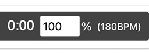

Play ABC tunes with synchronized notation, D tin whistle tablature, and live whistle fingerings.
Overview
Load, type, or paste ABC tunes and play them with synchronized standard notation and an optional D tin whistle tablature display.
The Whistle Fingering pane shows the current tune title and, during playback, a large fingering diagram for the note being played with its note name to the right.
Use Notation display to choose standard notation alone or standard notation with D-whistle tablature. The default is Notation + Whistle Tab.
Opening and Selecting Tunes
Type or paste a single tune into the ABC editor, open an .abc or .txt file containing one or more tunes, or send tunes directly from ABC Transcription Tools.
For multi-tune files, use the Tune menu to select the tune to display and play. Edits are retained when changing tunes.
The ABC editor intentionally accepts only one pasted tune at a time; multi-tune collections should be opened as a file or transferred from ABC Transcription Tools.
ABC Editing and Notation
The upper-left panel contains editable ABC. The lower-left panel shows abcjs notation and playback controls. The Notation display selector chooses whether D-whistle tablature is also shown.
Editing the ABC rebuilds the notation and audio. When whistle tablature is enabled it is rebuilt at the same time. Click a rendered note to select its corresponding ABC text and show that note in the fingering display.
The Small / Medium / Large / Largest selector changes the ABC editor text size and remembers the choice in this browser.
Whistle Fingering Display
The display uses standard D-whistle fingering. The note name appears to the right of the fingering symbol.
Check Show note to also show the current pitch as a quarter note on a staff just below the note name. The Show note setting is remembered in this browser and is not included in share links.
Note names are displayed using sharps or flats according to the tune's K: key and mode. When Show note is enabled, the notation below the note name uses the same sharp or flat naming.
Use Octave Display to choose uppercase note names with ' marks, lowercase/uppercase note names by octave, or color-coded versions of either style.
The two Color-coded choices draw the fingering glyph black below D5, dark red from D5 through C#6, and orange from D6 upward.
The Notation display and Octave Display choices are remembered in this browser and are also included in generated share links.
Playback and Tempo
As each melody note plays, the notation cursor follows the tune and the Whistle Fingering pane updates to that note.
Playback uses MIDI program 78 for the melody, and program 0 for bass and chords, overriding matching playback directives in the source ABC.
Check Metronome to add a meter-appropriate metronome click during playback. Changing this setting stops and rewinds the current tune. The metronome setting is remembered in this browser but is not included in share links.
Check Count in? to show a five-second countdown before playback starts when you click Play while playback is stopped.
The Count in setting is remembered in this browser.
Click Mute Melody in the Notation header to mute the whistle melody. This is available for every tune, including tunes without chord symbols, so you can practice with the metronome alone. If the tune contains chord symbols, chord and bass accompaniment remain audible.
Toggling Mute Melody or Unmute Melody stops and rewinds the tune. If it was playing, playback restarts from the beginning after the five-second count-in when Count in? is enabled, or immediately when Count in is disabled. If the tune was stopped, it remains stopped.
The button changes to Unmute Melody; click it again to restore the whistle melody.
The melody always starts unmuted when the tool is opened, and the mute setting resets to unmuted any time you change tunes or load a new tune collection.
Click Tempo in the Notation header to set playback tempo from 10% to 200% of the tune's original tempo. The value is remembered in this browser.
You can also click the tempo percentage box on the playback control bar:

Resizing and Full-Page View
On wide screens, drag the vertical divider to resize the left and whistle-fingering panes, and drag the horizontal divider to resize the ABC and notation panes. Double-click a divider to reset it.
Click Full-Page View on the ABC, Notation, or Whistle Fingering pane to expand it to the full browser window. Click Exit Full-Page to return to the normal pane view.
Saving and Sharing
Click Save to save the complete currently loaded tune collection, including edits. On mobile devices the saved file uses a .txt extension.
Share opens the Sharing Controls dialog. Choose Share Current Tune for the current tune or Share All Tunes for the complete loaded collection. The Sharing Controls dialog closes and the selected link opens in a Share Link dialog where you can copy it, save it as a text file, test it in a new browser tab, or open the ABC in the ABC Transcription Tools. Click Close to close the Share Link dialog.
Open in ABCTT opens the selected ABC in the ABC Transcription Tools ABC Editor in a new browser tab, using the player's normal instrument-specific conversion settings. For a Lesson Share Link, lesson-only information is omitted and only the tune and applicable instrument settings are sent to ABC Transcription Tools.
Settings received from a share link are used for that visit without changing your saved preferences. If you change any player setting, the current share-link settings become your saved preferences too. Opening a file with Browse loads its ABC only and does not change player settings.
When ABC arrives through a share link or direct transfer, click Click to Enable Playback if the browser requires a user gesture before audio can start.
Lesson Information for Music Teachers
Share opens the Sharing Controls dialog. Choose Configure Lesson… to create, edit, save, load, or share a lesson for your students.
A lesson uses the current tune only.
Enter a lesson title and instructions in the Configure Lesson dialog.
The lesson title and instructions are remembered in this browser while you work and are restored the next time you open Configure Lesson.
Save Lesson Configuration saves a reusable text file containing the current tune, lesson title, instructions, and the same player settings carried by a normal Tin Whistle Player share link.
Load Lesson Configuration can open either a saved Lesson Configuration file or a Lesson Link saved as a text file.
Those saved player settings are Notation display and Octave Display.
You can also open a saved Lesson Configuration with the main ABC file Browse button. In this case, only the ABC tune is loaded; the lesson title, instructions, and saved player settings are not applied.
If one or more tunes are already loaded, the tool asks for confirmation before replacing them with the lesson tune.
Loading a lesson configuration restores its tune, lesson title, instructions, and saved player settings. The restored player settings also become your saved preferences for future use.
Create Lesson Link creates a share link for the current tune containing the lesson title and instructions plus the same player settings carried by a normal share link.
The generated lesson link opens in the same Share Link dialog, stacked over the Configure Lesson dialog, where it can be copied to the clipboard, saved as a text file, tested in a new browser tab, or opened in the ABC Transcription Tools with lesson-only parameters removed. Click Back to close the Lesson Share Link dialog and return to Configure Lesson.
Lesson Information for Students
Your music teacher may provide you with a Tin Whistle Player lesson link.
Open the lesson link in your web browser to load the tune, lesson instructions, and the player settings chosen by your teacher.
Read the lesson information that appears, then click Start Lesson when you are ready to begin.
After clicking Start Lesson, click Click to Enable Playback to enable the audio playback controls.
The lesson setup controls and the lesson tune selector are shown at the top of the player but are initially disabled so the teacher's lesson setup cannot be changed.
The Browse and Save controls remain available while you are using a lesson, but the Share control is hidden so you cannot create share links or lessons.
You can use the normal notation, fingering display, playback, tempo, metronome, count-in, display, and full-page controls while working on the lesson.
You can edit the ABC if your teacher asks you to make changes.
Click Save to save your edited ABC.
You can use Browse to load a saved ABC file back into the player or open another ABC file. The lesson's player settings remain locked. After you load an ABC file, the tune selector is unlocked so you can select any tune in that file.
About
This tool was created by Michael Eskin
based on a suggestion by Ephraim Schafli.
If you find it useful, please consider a contribution via
Michael Eskin's Tip Jars